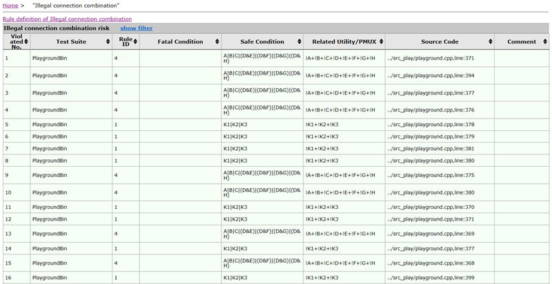
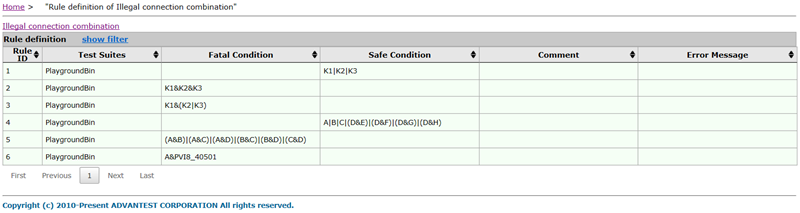

Illegal connection combination report
The illegal connection combination check examines the connection between device pin and instrument pin and reports the connections which violates the defined rules.
Illegal connection combination report
This table shows the connection combinations which violate the defined rules.

- Violated No.
- The index number of the detected risk.
- Test Suite
- The name of the test suite in which the illegal connection combination was found.
- Rule ID
- The ID of the rule as shown in the preferences window.
- Fatal Condition
- The condition for an illegal connection. If the defined conditions is met, a risk is
reported.
These conditions are defined in the preferences window.
- Safe Condition
- The condition for a safe connection. If the safe condition is not met, a risk is
reported.
These conditions are defined in the preferences window.
- Related Utility/PMUX
- The related relay combination on the utility or PMUX cards.
- Source Code
- The specific location of the reported relay connection definition in the source code, including the test method file name and the line number.
Rule definition summary
This is the summary of the rules that have been defined in the preferences window.

For details of the column definition, see Preferences for the illegal connection combination check.
You can filter the tables by entering text in the fields below the column header; after you press Return, only rows will be displayed in which the column contains the filter value.
To show and hide the filters, respectively, click the Show Filter and Hide Filter links in the table title.
You can sort the table by clicking the upward-pointing and downward-pointing triangles in the column titles.
If more than one page of results was found, you can browse the pages using the controls below the table.
Functional changes
- Introduced in SmarTest 7.4.3